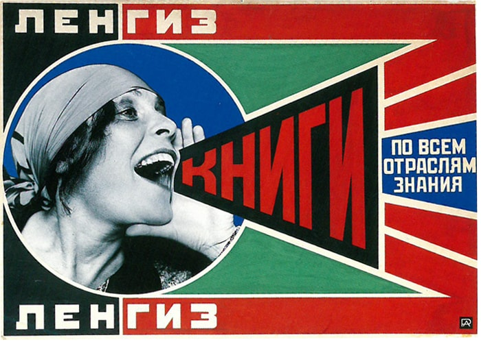
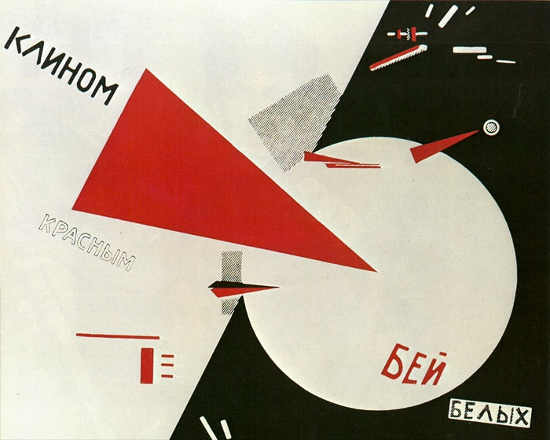
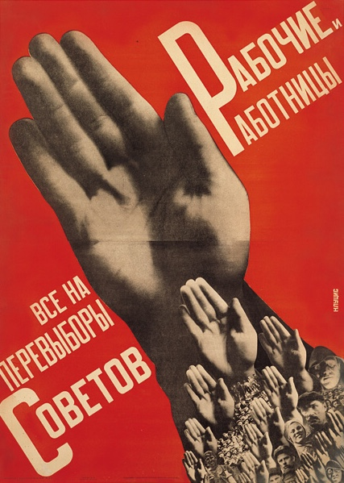

◆ ◇ ◆ GALLARY ◆ ◇ ◆
● アレクサンドル・ロトチェンコ
フォトモンタージュの手法を開発したと言われている。
▼ 全ての人が本を読むことが革命だ、と訴えるポスター。

● エル・リシツキー
鑑賞するものに行動を促す、というテーマを生涯持ち続けた。
▼ 赤い楔で白を打て、という政治的宣言を描いたポスター

● グスタフ・クルーツィス
シュプレマティスムの平面性、抽象性と、構成主義の三次元の実験性、空間性を統一したと言われている。
▼すべての労働者はソビエトの改選へ
